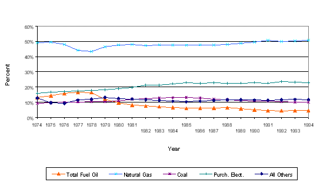
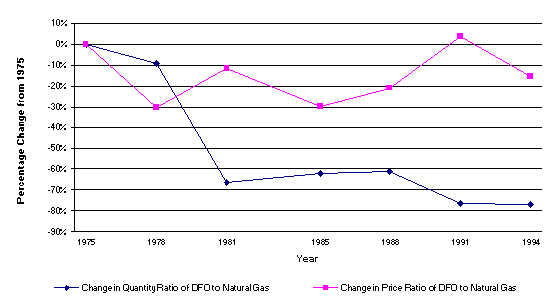
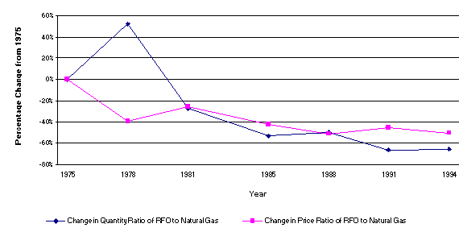
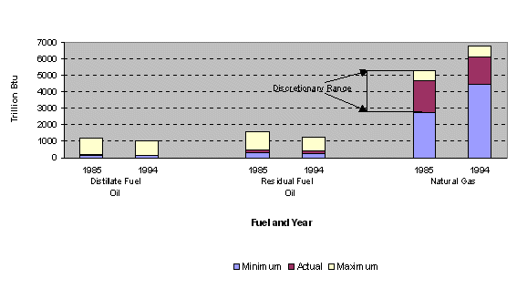

Figure 1: Percentage of Total Purchased Fuels by Type of Fuel

Sources: Energy Information Administration. Office of Energy Markets and End Use, Manufacturing Energy Consumption Survey (MECS): Consumption of Energy; U.S. Department of Commerce, Bureau of the Census, Annual Survey of Manufactures (ASM): Statistics for Industry Groups and Industries: Statistical Abstract of the United States.
Note: The years below the line on the "X" Axis are interpolated data--not directly from the Manufacturing Energy Consumption Survey or the Annual Survey of Manufactures.
Figure 2: Changes in the Ratios of Distillate Fuel Oil to Natural Gas

Sources: Energy Information Administration. Office of Energy Markets and End Use, Manufacturing Energy Consumption Survey (MECS): Consumption of Energy; U.S. Department of Commerce, Bureau of the Census, Annual Survey of Manufactures (ASM): Statistics for Industry Groups and Industries: Statistical Abstract of the United States.
Figure 3: Changes in Ratios of Residual Fuel Oil to Natural Gas

Sources: Energy Information Administration. Office of Energy Markets and End Use, Manufacturing Energy Consumption Survey (MECS): Consumption of Energy; U.S. Department of Commerce, Bureau of the Census, Annual Survey of Manufactures (ASM): Statistics for Industry Groups and Industries: Statistical Abstract of the United States.
Figure 4: Minimum, Maximum and Actual Consumption by Fuel and Year

Source: Energy Information Administration, Office of Energy Markets and End Use, 1985 and 1994 Manufacturing Energy Consumption Surveys.
 Top of Page
Top of Page
 Fuel Oil in Manufacturing
Fuel Oil in Manufacturing
- File Last Modified: May 15, 2000
- Contact: robert.adler@eia.doe.gov
- Robert Adler
- Survey Manager
- Phone: 202-586-1134
- Fax: 202-586-0018
URL: http://www.eia.gov/emeu/consumptionbriefs/mecs/mecs_fueloil_figs.html
For questions about content, please contact the National Energy Information Center:
infoctr@eia.doe.gov
Phone: (202) 586-8800
For help with technical problems, please contact the webmaster:wmaster@eia.doe.gov
Phone: (202) 586-8959